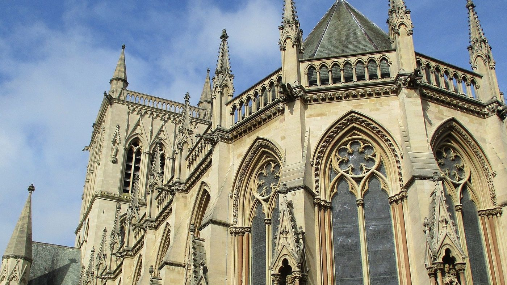
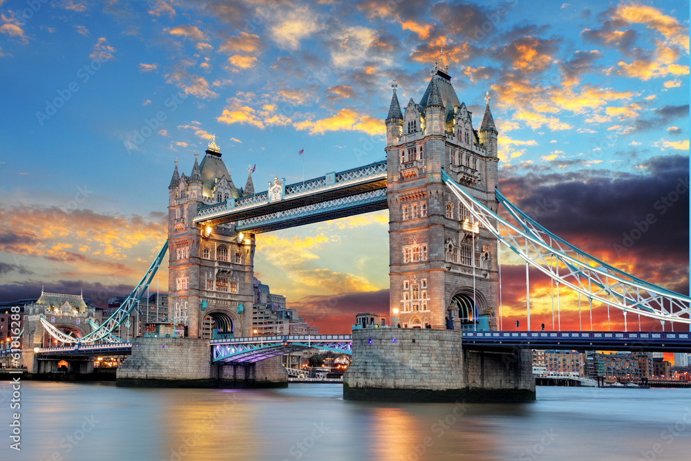

Anglie
Anglie je největší a nejlidnatější část Spojeného království a hraje důležitou roli v evropské historii, kultuře i politice. Hlavním městem je Londýn, jedno z nejvýznamnějších světových center obchodu, vzdělání a umění. Anglie je známá svými univerzitami, napříkladOxfordem aCambridge, které patří mezi nejstarší na světě. K tradičním symbolům země patří čaj o páté, červené telefonní budky a dvojpatrové autobusy. Klima je mírné, často deštivé, což je pro Anglii typické. Angličtina, která odtud pochází, je dnes nejpoužívanějším jazykem na světě.

Anglie nabízí mnoho známých památek a turisticky atraktivních míst. Londýn je plný ikonických míst, například Big Ben, Tower Bridge, Buckingham Palace či British Museum. Velmi oblíbeným cílem je i Stonehenge, tajemná prehistorická památka s nejasným původem. Na jihu leží města jako Brighton s pobřežní atmosférou nebo Bath, známý svými římskými lázněmi. Na severu Anglie stojí za návštěvu York se středověkým centrem a katedrálou. Milovníci literatury mohou navštívit Stratford-upon-Avon, rodné město Williama Shakespeara. Anglie tak nabízí kombinaci historie, kultury i moderního městského života.

